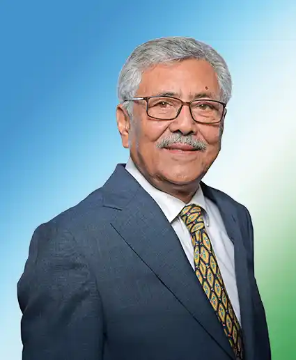

Sudhir Mittal is a prominent Nepalese corporate leader and the Chairman of Shree Airlines, who brought over a decade of international development finance experience to Nepal's aviation sector. After earning his MBA from INSEAD in France, he spent years with The World Bank Group's International Finance Corporation (IFC), serving as its 1st Residential Representative and Country Director in Nepal, and later working out of the United States. Following the passing of his late father, pioneering founder Banwari Lal Mittal, he took over the executive leadership of Shree Airlines in 2015. Under his stewardship, the company successfully transitioned from a specialized helicopter operator into a major domestic commercial carrier by introducing fixed 2 wing turbo-jet passenger flights, driven by his result-oriented management style focused on operational integrity and modernizing Nepalese aviation.

| Skills | Years |
|---|---|
| Activitation leadership | 11 |
| Development Finance | 10 |
| Corporat Straegy | 15 |
| Operational Management | 11 |
| International Relations | 12 |